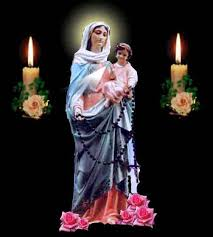

En Salida
-
La presente sección está dedicada a contar a la comunidad, las distintas acciones que ya sean pequeñas o grandes, son dignas de ser contadas, destacadas y reconocidas.
A continuación se detallan algunas:Virgen del Rosario de San Nicolás Peregrina de Madrugadores
Por inciciativa y gestión del Madrugador Marcelo Bataller, se realizo la compra, se acondiciona y luego se aloja la imagen en un recipiente de vidrio.

A posterior se presenta en la comunidad se realiza la Bendición y comienza su camino de peregrinación.
Si hay interesados en recibir la imagen de Nuestra Señora del Rosario de San Nicolás, acceder a contacto y enviar solicitud.